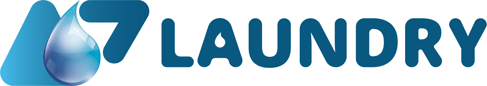

Onde a A7 esta, o que ja construiu, como esta evoluindo e o funil necessario para transformar vantagem operacional em dominio de categoria.
Snapshot executivo: 9 de setembro de 2026 | Orlando, Florida | Uso interno
O concorrente comprou velocidade de produto. A A7 construiu reputacao, atendimento de hotel, operacao real e uma camada propria de dados.
A7 aparece no Google Maps com nota 5,0, 25 avaliacoes, telefone, site e estimativa online. O fluxo por WhatsApp reduz friccao para hospedes e o A7 OS registra pedido, custodia, invoice, pagamento e entrega.
Google Ads acelerou gasto e Meta voltou a veicular, mas a semantica de conversao ainda exige reconciliacao com pedidos pagos. Escalar agora sem um placar unico pode comprar atividade, nao crescimento.
Impressoes do Search Console cresceram 40,1% contra os 28 dias anteriores, enquanto cliques cairam 8,8%. Posicao melhorou de 13,4 para 11,9. O gargalo migrou de descoberta para snippet, intencao e autoridade local.
Booking e automacao sao fortes, mas nao foi encontrado blog editorial, prova operacional profunda ou um Google Business Profile proprio claramente descobrivel. A7 pode ocupar hotel, turista, residentes e autoridade local antes que a plataforma amadureca.
Pedido pago e receita reconciliada sao a verdade. Cliques, mensagens e eventos ficam como sinais auxiliares.
Guest Rescue, Resident Care e Host Reliability, cada um com oferta, pagina, prova e follow-up proprios.
Metade do preco cria volume sem provar margem. A A7 deve vender tempo, previsibilidade e cuidado.
| Fonte / periodo | Atual | Anterior | Leitura |
|---|---|---|---|
| Search Console | 10 ago-6 set | 31 cliques 2.410 impr. CTR 1,3% pos. 11,9 | 34 cliques 1.720 impr. CTR 2,0% pos. 13,4 | Alcance e ranking melhoram; a captura de clique perde eficiencia. Prioridade: title, snippet, intencao e GBP. |
| Search Console | 30 jun-6 set | 76 cliques 4.980 impr. CTR 1,5% pos. 14 | 63 cliques 3.968 impr.* | Mais 13 cliques e 1.012 impressoes desde o audit de 28 ago; janelas nao identicas, portanto e expansao acumulada, nao taxa de crescimento. |
| GA4 | ultimos 28 dias | 322 usuarios 245 eventos-chave 2,6 mil eventos 21 compras | +22,4% +0,4% +35,2% +40,0% | Audiencia e compras registradas cresceram. Eventos-chave quase estaveis mostram que volume de eventos nao equivale a vendas. |
| GA4 | ultimos 7 dias | Direct 32 Paid 29 Organic 14 Social 2 AI 1 | - | Paid e Direct lideram sessoes. Organic continua pequeno, mas sustentado; IA ja existe como canal observavel. |
| Google Maps | 9 set | 5,0 25 reviews | 5,0 23 reviews** | Duas novas avaliacoes desde o snapshot anterior. Esta e a prova social publica mais forte da A7. |
Disciplina de leitura: GA4 ainda carrega historico de configuracao que supervalorizou eventos. “21 compras” e sinal analitico; receita, margem e CAC devem ser reconciliados com pedido e pagamento.
investimento
impressoes
cliques
CTR
investimento
impressoes
alcance
conversas
| Leitura | Numero | Diagnostico |
|---|---|---|
| Google Ads - campanha ativa | R$ 150/dia | Guest Laundry EN; qualificada, limitada pelo volume de pesquisas. |
| Google Ads - CPC medio | R$ 21,71 | 171 cliques sobre R$ 3.711,78. Exige forte taxa de pedido para sustentar CAC. |
| Google Ads - conversoes reportadas | 39 | Taxa 22,81%, custo/conversao R$ 95,17, valor R$ 4.057,09. Nao tratar automaticamente como 39 vendas. |
| Google Ads - share de impressao | 36,14% | Perda por orcamento 8,79%; por ranking 55,06%. Qualidade/relevancia e o maior vazamento. |
| Meta - campanha JUL28 | 28 conversas $ 13,84/cnv | Alcance 11.603; frequencia 1,84. Historico recente, campanha hoje desativada. |
| Meta - campanha SET26 | 9 conversas $ 12,20/cnv | Campanha ativa; $109,84 investidos, 3.225 impressoes, alcance 1.376 e frequencia 2,34. |
Regra de caixa: nenhuma plataforma recebe credito por venda ate o pedido pago carregar origem. O placar de decisao e: spend -> conversa qualificada -> pedido aceito -> pagamento reconciliado -> margem de contribuicao.
Travar termos irrelevantes, melhorar ad/landing match e importar purchase reconciliado.
Entrega restabelecida. Monitorar conversa qualificada, pedido pago e frequencia antes de aumentar verba.
Escalar somente com CAC por pedido pago e capacidade operacional por janela.
Perfil encontrado por busca exata no Google Maps; categoria “Servico de lavanderia”, telefone, site, aberto 24 horas e estimativas online.
A busca exata nao retornou perfil proprio. A busca do endereco 1359 E Vine St retorna Clean Laundry: 4,0 e 192 reviews.
Conclusao cuidadosa: nao encontrar um perfil nao prova inexistencia. Prova que, em 9 set, ele nao estava claramente descobrivel pela marca consultada. Isso e uma desvantagem local real para o concorrente e uma janela para a A7.
| Ativo | Hoje | Proxima camada | KPI |
|---|---|---|---|
| Reviews | 25, nota 5,0 | Pedir review apos entrega, com link/QR e idioma do cliente. | +8 a +12 reviews/mes; nota >=4,8 |
| Fotos | Presenca publica confirmada; mix nao auditado | Publicar prova real de coleta, dobra, embalagem e hotel, sem PII. | 4-8 fotos/mes |
| Servicos | Categoria de lavanderia | Normal 24h, Express 8h quando confirmado, comforter e pickup/delivery. | Completude e cliques por servico |
| Posts | Nao auditado | Oferta sazonal, hotel corridor, resident bedding e prova operacional. | 1 post/semana |
| Entidade | Historico de endereco conflitante | Manter modelo service-area business, endereco oculto se nao atende no local. | NAP e SAB consistentes |
Periodo Stripe 1 jul-31 ago; primeiro pagamento em 25 jul; zero reembolso; 5 payouts somando $4.020,22. Receita por canal ainda dependia da reconciliacao operacional.
| Dimensao | A7 Laundry Orlando | WashFold Orlando | Lider |
|---|---|---|---|
| Posicionamento | Hospede, hotel, Airbnb, conforto em Orlando | Familia, bairro, conforto domestico | A7 - mais distinto |
| Urgencia | Normal 24h e Express 8h quando confirmado | Retorno tipico em alguns dias / 48h+ | A7 |
| Prova local | GBP 5,0 com 25 reviews | Perfil proprio nao localizado | A7 |
| Booking | WhatsApp + /order + A7 OS | 4 etapas, ZIP, preferencias, preautorizacao Stripe | WashFold |
| Automacao | Operacao interna propria em evolucao | SMS, conta, tracking, recorrencia e gift card | WashFold |
| SEO publicado | 62 URLs submetidas; cluster maior, conteudo editorial | 29 URLs; 21 ZIP pages, estrutura programatica rasa | A7 |
| Arquitetura tecnica | Site + OS + atribuicao operacional | WashFoldKit + Next.js + Vercel + Supabase + Stripe | Empate diferente |
| Oferta agressiva | Preco e velocidade claros | HALFOFF, $20 off e 30% em mensagens simultaneas | WashFold em aquisicao |
| Consistencia da promessa | Boa, mas “free pickup” conflita com area confirmada | Promocoes e minimos variam entre pagina e criativo | A7, com ajuste |
| Conteudo social | Grande biblioteca de criativos no projeto | Presenca pequena, mas 6 anuncios ativos e video | A7 ativo subutilizado |
Half price pode atrair demanda cara e fragil. O diferencial A7 e reduzir risco da viagem e devolver tempo, nao ser o wash-and-fold mais barato.
ZIP, horario, preferencias, endereco e pagamento em poucos passos - mas preservando o WhatsApp como concierge e o OS como verdade operacional.
Leitura estrategica: o concorrente e uma maquina transacional eficiente, nao uma autoridade local consolidada. A7 deve igualar a friccao minima e superar em relevancia, prova, velocidade confirmada e relacionamento.
Valor A7 = resultado desejado x confianca percebida / espera x esforco do cliente.
Traducao operacional da equacao de valor: roupa limpa no hotel, no prazo confirmado, sem app, sem deslocamento, sem perder um dia em Orlando.
Para: hospede com roupa acumulada ou prazo de viagem.
Promessa: coletamos onde voce esta e devolvemos dobrado em 24h; 8h quando confirmado.
Prova: 25 reviews, hotel/front desk, order status.
CTA: Confirm my pickup window.
Para: morador com comforter, duvet, blanket ou carga acumulada.
Promessa: item volumoso limpo sem carregar ate a lavanderia.
Oferta: comforter como porta + bundle de wash-and-fold.
CTA: Get bedding pickup quote.
Para: host/Airbnb com risco de turnover.
Promessa: coleta, custodia e entrega visiveis.
Oferta: piloto por propriedade, sem contrato longo.
CTA: Request reliability plan.
| Camada | Guest | Resident | Host |
|---|---|---|---|
| Resultado | Voltar a curtir Orlando | Casa leve e roupa volumosa resolvida | Turnover sem surpresa |
| Redutor de tempo | 24h / Express 8h confirmado | Janela agendada | Rotas e SLA por conta |
| Redutor de esforco | Front desk + WhatsApp | Pickup residencial | Handoff documentado |
| Redutor de risco | Rewash quando aplicavel | Instrucao de cuidado | Custodia + comprovantes |
| Bonus economico | Checklist de bagagem limpa | Bundle, nao desconto puro | Piloto e volume progressivo |
Nao prometer velocidade, area gratuita ou cuidado especial sem capacidade confirmada. Framework melhora clareza; nao substitui margem nem operacao.
Value Ladder A7: guia/checklist ou estimador -> primeira coleta -> Express/bundle -> repeticao -> conta de host/volume. Cada degrau exige valor real; nao e licenca para empilhar upsells irrelevantes.
Situacao reconhecivel em 2 segundos: “Your suitcase should not become a laundry basket.”
Mostre a jornada real da bag no hotel ate voltar limpa, com horario e prova.
Preco, minimo, janela, inclusoes e proxima acao sem ambiguidade.
Uma coleta pode gerar: bastidor vertical, foto da dobra, explicacao de front desk, FAQ de hotel, review, story de prazo e prova de entrega.
Remover nome, quarto, telefone, etiquetas e imagens identificaveis. Consentimento quando cliente ou propriedade puder ser reconhecido.
videos curtos por semana
posts GBP por semana
pagina ou refresh SEO por semana
case study real por mes
Conteudo com funcao: cada peca precisa levar a uma pagina/intencao e cada pagina a um CTA rastreavel. Alcance sem caminho e entretenimento; caminho sem prova e friccao.
Monitorar a retomada Meta; auditar termos e conversoes Google; criar painel spend -> paid order; checar capacidade Express e saldo de midia.
Reescrever titles/snippets de paginas com posicao 7-15; corrigir dry-clean/laundromat mismatch; fechar canonical comforter; alinhar free pickup com area confirmada.
Review request pos-entrega, fotos reais, servicos, posts e replies. Verificar SAB, categorias e consistencia de entidade.
Guest Rescue, Resident Bedding e Host Reliability. Uma promessa, uma prova, um CTA e uma attribution key por caminho.
12 videos operacionais, 3 cases anonimizados, hotel/front-desk proof, comforter handling e prazo confirmado.
Separar urgente/hotel, resident bedding e brand. Negativas fortes, landing exata e purchase reconciliado como macro conversao.
Cold video de problema, retarget de prova, WhatsApp de janela. Criativo localizado e oferta sem descontos conflitantes.
Review/referral, reminder opt-in, segundo pedido, host pilot, concierge/front desk outreach e backlinks locais legitimos.
Sequencia obrigatoria: nao aumentar budget so porque CTR ou conversas melhoraram. Escala exige pedido pago, margem positiva, prazo cumprido e capacidade disponivel.
| Camada | KPI principal | KPI de qualidade | Decisao |
|---|---|---|---|
| Demanda | Impr., reach, share | Query/segment fit | Onde aumentar relevancia |
| Captura | Cliques, CTR, visits | Engagement + landing match | Qual promessa merece mais exposicao |
| Leads | Conversas qualificadas | Hotel/ZIP/servico/prazo presentes | Qual canal traz demanda operavel |
| Vendas | Pedidos aceitos | Lead -> order | Oferta e follow-up |
| Financeiro | Pedidos pagos + receita | CAC, AOV, taxa, margem | Escalar, manter ou pausar |
| Operacao | On-time pickup/return | Incidente, rewash, atraso | Capacidade e promessa |
| Reputacao | Reviews novas | Nota e temas | Prova e treinamento |
| Retencao | Repeat 30/60/90 | LTV e referral | Proxima oferta |
1) pedido pago cresce; 2) CAC cabe na margem; 3) entrega no prazo; 4) reviews e repeticao nao deterioram.
CTR alto sem pedido, conversao sem receita, conversa sem qualificacao ou venda sem capacidade sao sinais de parada.
Margem de contribuicao de pedidos pagos e entregues no prazo, por motor de demanda.
Esta metrica une marketing, venda, pagamento e experiencia. Evita que cada plataforma “vença” enquanto o negocio perde.
pagamentos com origem
entregas no prazo
nota Google
spend com owner
A historia nao e “um site novo”. A7 saiu de anuncios e WhatsApp soltos para uma base que pode ligar demanda, pedido, pagamento e entrega. O proximo salto nao depende de mais features; depende de fazer o flywheel girar com dados confiaveis.
Search impressions +40,1% em 28 dias; GA4 active users +22,4%.
Cliques -8,8% e CTR 1,3%. Relevancia precisa converter exposicao.
GBP de 23 para 25 reviews, mantendo nota 5,0.
Eventos-chave historicamente incluiram microeventos. Compra analitica deve ser validada contra o ledger operacional.
39 conversoes reportadas nao equivalem automaticamente a 39 vendas. Valor de conversao esta em BRL e precisa de reconciliacao.
Conta liberada e campanha SET26 ativa. Os 9 resultados sao conversas iniciadas, nao vendas; CAC e ROAS continuam dependentes da conciliacao com pedidos pagos.
Ausencia em busca de Maps nao prova que nao exista GBP; prova baixa descobribilidade na consulta observada.
Fontes proprietarias consultadas em 9 set 2026: Google Search Console (a7laundry.com, dados ate 6 set); GA4 property 543807649; Google Ads CID 290-113-2891 (dados ate 8 set); Meta Ads account 650201661142284 (campanha ativa, recorte ate 8 set); Google Maps.
Documentos internos: docs/audits/2026-08-28-forensic-seo-geo-eeat-ai-search-audit.md; docs/audits/2026-09-01-orlando-historical-stripe-import.md; docs/audits/2026-09-09-washfold-orlando-competitive-funnel-dossier.md; MANIFESTO.md; blueprint do A7 Orlando OS.
Fontes publicas: https://a7laundry.com/; https://washfoldorlando.com/; paginas Pricing, FAQ, Service Areas, Commercial e Terms do concorrente; Meta Ad Library; Google Maps; Verisign RDAP.
Referencias de framework: Acquisition.com - $100M Offers/$100M Leads e Value Equation; ClickFunnels - Hook, Story, Offer; GaryVaynerchuk.com - Document, Don't Create. Os frameworks foram adaptados, nao reproduzidos.
Politica GBP: https://support.google.com/business/answer/3038177 - negocio de area de servico deve representar marca, endereco/area e categorias com precisao; endereco residencial deve permanecer oculto quando nao ha atendimento no local.
Reputacao local + promessa especifica + distribuicao por intencao + pedido pago reconciliado + entrega no prazo.
Este relatorio e estrategico e nao autoriza mudancas de campanha, orcamento, conta, GBP ou sistema.